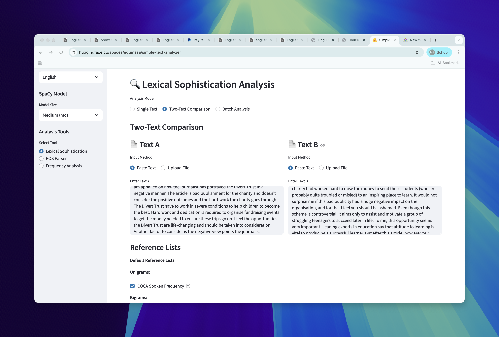
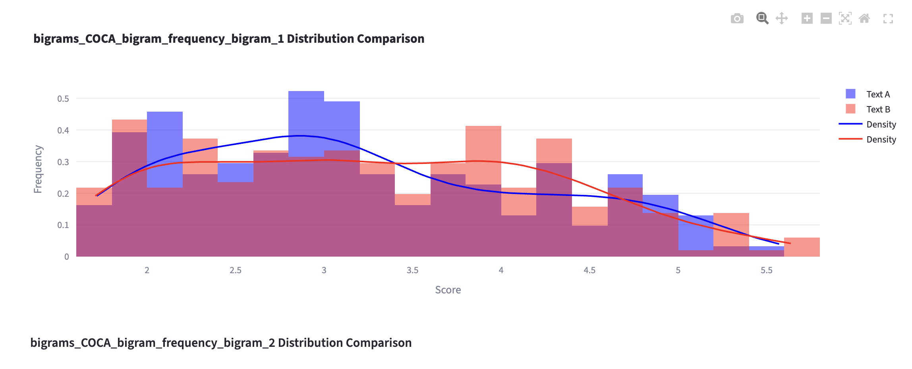
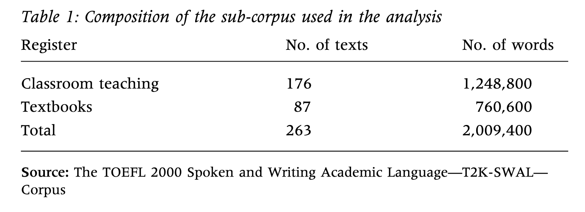

[1] 0.25Instruction
Compile a Japanese frequency list based on a corpus.
Aozora 500 from Google Drive..tsv or .txt.Success Criteria
Your submission …
Goal: to replicate analysis on GiG.
You will need to have access to both metadata file.
The corpus data is here.
GiG Metadata
Success Criteria
Your submission …
quality of word use in each textWe can also compare two texts in simple text analyzer.
two-text
!
Success Criteria
Your submission …
By the end of this session, students will be able to:
- Explain different types of multiword units: collocation, n-grams, lexical bundles
- Demonstrate how major association strengths measures (t-score, Mutual Information, and LogDice) are calculated using examples
→ These are not sufficient for complete analysis of learner language.
Which one do you think reflect “better” vocabulary use?
Is important for college students to have a part-time job? I think that has much opinion to answer it. The part-time job is a job that can do in partial time. So the college student can do part-time job when they has spare time (if they want). There are many reasons why the college student do part-time job (if they do).
I find it hard to make a generalisation on whether it’s important or not for college students to have a part-time job, because this seems like something very individual and highly dependent on the individual student and their circumstances. Jobs serve a few main functions: to earn money, to gain experience, to get a head-start in a career, and to have something to do.
Multiword Unit/Sequence is a cover term for different things.
| Formula type | Description | Examples |
|---|---|---|
| Phrasal verbs | verbs followed by an adverbial particle, where the phrase as a whole is used with a non-literal meaning | blow up, shut down |
| Idioms | a relatively fixed sequence of words with a non-literal, typically metaphorical meaning | kick the bucket |
| Binomials | recurrent conventional phrase of two words from the same POS, connected by a conjunction | black and white |
| Pragmatic formulas | context-bound phrases that are characteristic of a particular speech community | thank you, bless you |
| Formula type | Description | Examples |
|---|---|---|
| Collocations | Pairs of words that are syntagmatically associated | take time, young people |
| Lexical bundles | Contiguous word combinations which occur very frequently in language | in other words |
| Lexicalized sentence stems | A conventional expression in whih some elements are fixed and others allow for a range of possibilities | what I want you to do is |
We have two major approaches to define MWUs:
| Approach | Description |
|---|---|
| Frequency-based | Quantifies the degree of associations between component words |
| Phraseological | Involves human judgement to focus on semantic transparency, non-compositionality, and/or fixedness. |
frequency-based approach in this course.play + role, meet + expectationblack and whitekick the bucket, over the moonin terms of the, the extent to whichRecurrence and co-occurrence
We can extract recurrent units by:
Example: I have not had Gyutan yet this time.
Bigram: [I have] [have not] [not had] ... [this time].
Trigram: [I have not] [have not had] [not had Gyutan] ...
4-grams corpus
4-grams from 111-122
Classroom teaching, Textbooks, Conversation and Academic prose

| Perspective | Example |
|---|---|
| Genre representation | “classroom teaching, office hours, study groups, on-campus service encounters, textbooks, course packs, and other written materials e.g. university catalogues, brochures.” (Biber et al., 2004) |
| Disciplines | Business, Education, Engineering, Humanities, Natural Science, and Social Science |
| Educational level | Lower devision undergrad, Upper devision undergrad, and Graduate. |
| Regional variation | Northern Arizona University, Iowa State University, California State University at Sacramento, Georgia State University |
| Function | Description | Example |
|---|---|---|
| Referential | Sequences that “makes direct referents to physical or abstract entities”. | there's a lot of, a little bit of, in terms of the, as a result of |
| Stance | “expresses attitudes or assessments of certainty that frame some other proposition” | I don't know if, are more likely, you might want to, it is important to |
| Discourse organizer | signals textual relations between current and previous/upcoming discourse | if you look at, let's have a look, I mean you know |
Referential, Stance, Discourse| Bundle | Category |
|---|---|
| on the other hand | |
| I don’t know how | |
| greater than or equal | |
| you have to be |
To be able to identify interesting recurrent patterns
When we talk about co-occurrence, things are a bit more complex.
meet + expectationIt counts the number of words within a specified window
e.g., +/- 4 words window = counts items 4 words before and after the node word.
I strongly think the expectation was met for the ...
[L4] [L3] [L2] [L1] [ node ] [R1] [R2] [R3] [R4]Sometimes, the collocates can be more distant.
I strongly think the expectation for the final exam was met ....
[L4] [L3] [L2] [L1] [ node ] [R1] [R2] [R3] [R4] [???]Cannot capture this unless we expand the window….
But this raises trade-off between noises and more accurate retrieval.
meet + expectation accurately (even if they are far away).Dependency Parsing example
A few depedency labels are useful to identify collocations
| Dependency label | Name | Example |
|---|---|---|
amod |
Adjectival Modifier | significant + change |
dobj |
Direct Object | play + role in active voice (play a role) |
nsubjpass |
Nominal subject of a passive construction | play + role in passive voice (role is played) |
advmod |
Adverbial modifier | change + incrementally |
There are two main ways to capture co-occurrence
Discuss:
collocation-freq
The issue: A word can co-occur just because they are frequent by default.
Strengths Of Association (SOA) provides ways to take “frequency” of individual words account.
Several SOA measures are commonly used (Gablasova et al., 2017).
Now let’s first look at expected cooccurrences.
When we think about “association”, we can think about it from a probability perspective.
| # with word 1 | # without word 1 | |
|---|---|---|
| # with word 2 | Frequency of collocation | Remaining frequency of word 2 |
| # without word 2 | Remaining frequency of word 1 | Rest of corpus size |
| # with word 1 | # without word 1 | Total | |
|---|---|---|---|
| # with word 2 | 50 | 450 | 500 |
| # without word 2 | 450 | 999,050 | 999,500 |
| Total | 500 | 999,500 | 1,000,000 |
Let’s calculate the expected frequency.
Now we are ready to calculate MI.
\[MI = {log_2{ \text{Observed freq} \over \text{Expected frequency} }}\]
Let’s do this:
MI is the ratio between observed and expected frequency in logarithmic scale.
\[MI = {log_2{ \text{Observed freq} \over \text{Expected frequency} }}\]
T-score is calculated as follows:
Using the same numbers:
\(\text{log Dice} = 14 + \log_2( {{2 \times Observed} \over {R_1 + C_1}})\)
Paquot (2019): “the range of phraseological units that surface in language production and the degree of sophistication of such phraseological units” (p. 124)
| Constructs | Description |
|---|---|
| Phraseological diversity | “a (derived) type–token ratio representing the number of unique phraseological units to the total number of phraseological units, by analogy with the measurement of lexical diversity.” (p. 125) |
| Phraseological sophistication | “the selection of word combinations that are ‘appropriate to the topic and style of writing, rather than just general, everyday vocabulary’” (p. 125) |
\(\text{Diversity of PU} = {\text{Type of PU} \over \sqrt{\text{Token of PU}}}\)
Mean is typically used.\(\text{Sophistication of PU} = {\text{Total score for SOAs} \over \text{# of Token with SOA values}}\)
Linguistic Data Analysis I